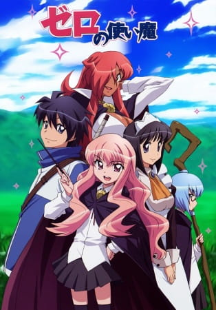
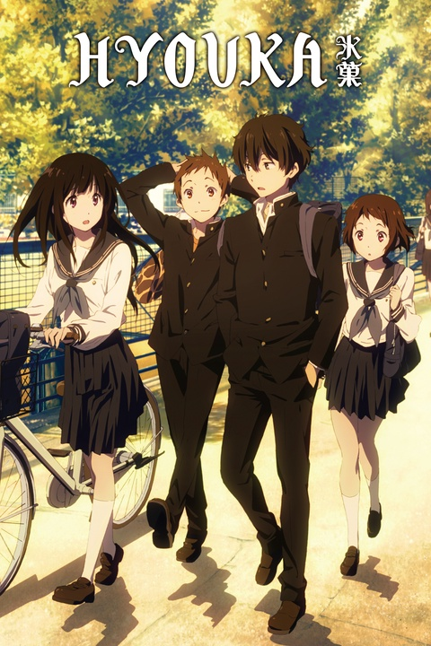
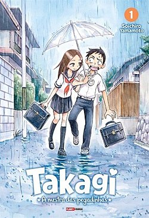
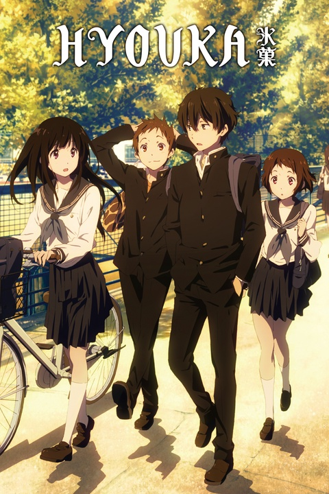
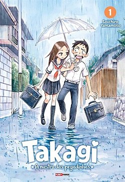

Para quem não sabe, animes são animações japonesas baseadas em mangás (HQs japonesas) e light novels (livros). Eu iniciei meu gosto por esse tipo de entretenimento por meio de um jogo de Dragon Ball Z, e por meio dele acabei conhecendo mais sobre esse mundo.
Porém, o primeiro anime que eu assisti não doi nenhum Shounen, mas sim um Isekai: Zero no Tsukaima. Esse anime é marcante por me introduzir nesse mundo de animes e por ter uma história interessante também.

Zero no Tsukaima - o primeiro anime que asssiti
Assim, começei a assistir mais animes como: Shingeki no Kyojin, Boku no Hero, Hunter x Hunter, Hyouka, Charlotte entre outros. E como descrito antes, esses animes foram minhas inspirações para o desenho.
Atualmente, assisto animes mais leves: como HitoriBocchi, Spy x Family, Komi-san, Nagatoro, My Dress-Up Darling, Karagai Jouzu no Takagi-san, etc. Por conta dos cursos, não assisto animes tão frequentemente, mas estou voltando aos poucos. Também leio bastante mangá.

 



Alguns animes que já assiti